| NAME (nomenclature) | REAL SAMPLE | WHERE IT IS USED |
|---|---|---|
| SHEETING | Building OUTLINE. Used on: Column Plan, Anchor-Bolt Plan, Roof Plan, Elevations, Framing. | |
| BORDER | Sheet border. Used on: EVERY sheet. | |
| GRID-LINES | 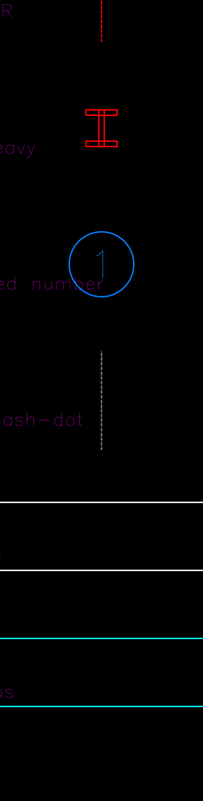 |
The grid AXIS lines (between/through columns). Used on: every plan, section, elevation, framing. |
| GRID / GRID-TEXT | 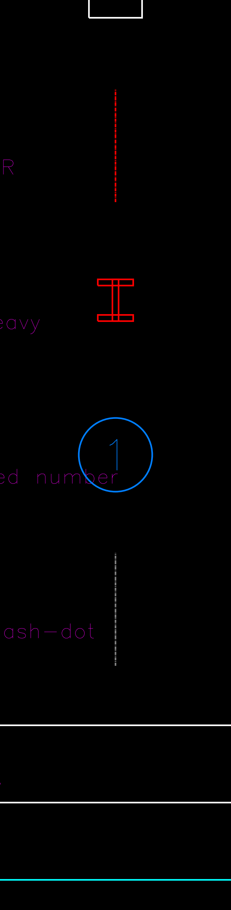 |
Grid BUBBLE (circle) + its number/letter. Used on: every sheet that shows grids. |
| COLUMNS | COLUMN I-section symbol (red). Used on: Column Plan, Anchor-Bolt Plan, Cross-Section — at every grid node. | |
| COL-CENTER | 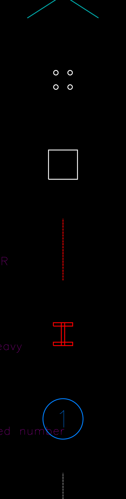 |
Column CENTRE-LINE. Used on: Column Plan. |
| PLATES | Base PLATE. Used on: Anchor-Bolt Plan, Cross-Section. | |
| BOLTS | 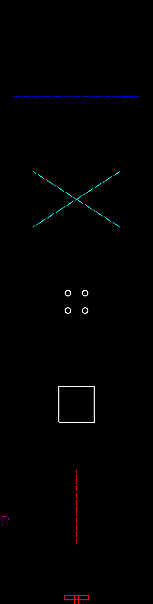 |
Anchor BOLTS. Used on: Anchor-Bolt Plan, Cross-Section. |
| CROSS | 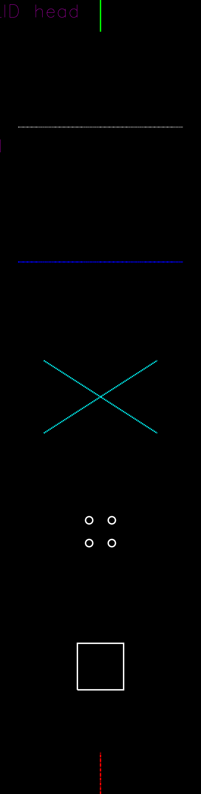 |
Cross-BRACING X (between the columns of a braced bay). Used on: Column Plan, Wall Framing, Roof Framing. |
| RIDGE | RIDGE centre-line. Used on: Column Plan, Roof Plan, Cross-Section, Roof Framing. | |
| RAFTER | 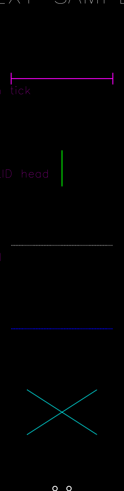 |
RAFTER centre-line. Used on: Column Plan, Roof Framing. |
| ARROWS | 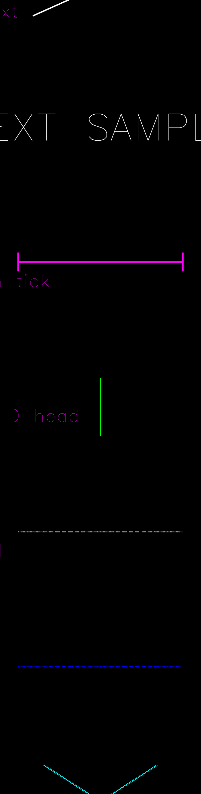 |
Roof FALL / slope arrow. Used on: Column Plan, Roof Plan. |
| DIMENSIONS | 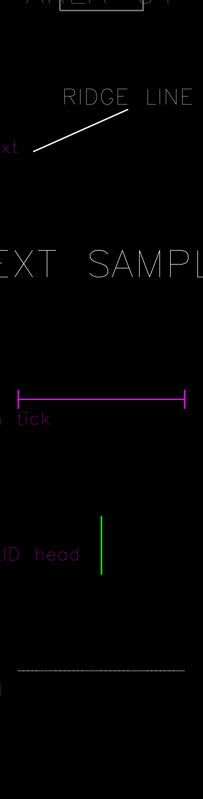 |
DIMENSION chains (magenta). Used on: EVERY sheet. |
| TEXT | 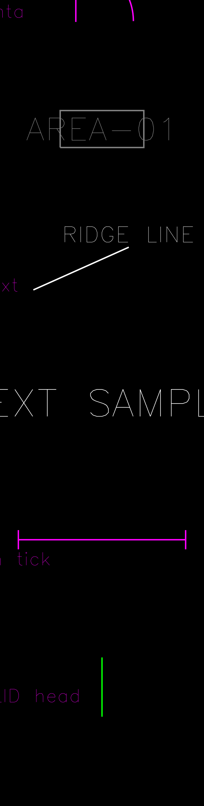 |
Wall labels, notes, titles. Used on: EVERY sheet. |
| LEADER | 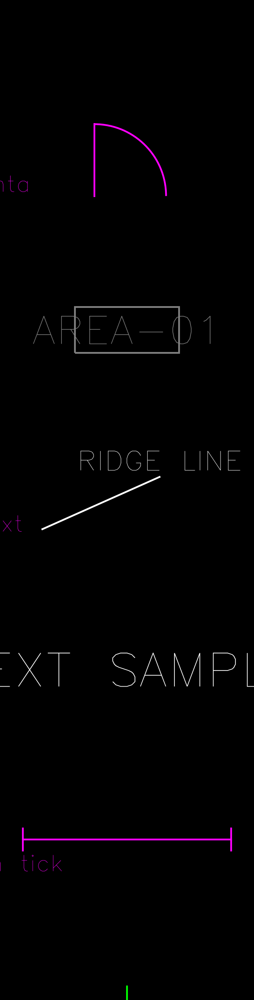 |
Leader CALLOUTS (RIDGE LINE, BEARING FRAME, CL OF RAFTER…). Used on: every sheet. |
| AREA-MARK | AREA tag (boxed AREA-0N). Used on: Column Plan, Roof Plan. | |
| OPEN | DOOR / WINDOW / opening. Used on: Column Plan, Elevations. | |
| GUTTER | 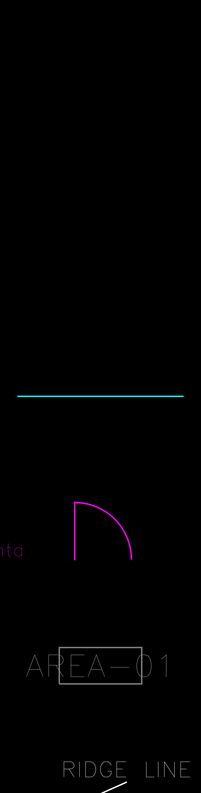 |
Eave GUTTER line. Used on: Cross-Section, Elevations. |